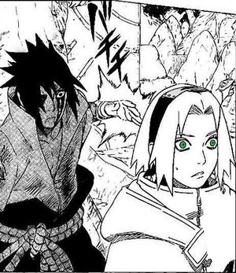
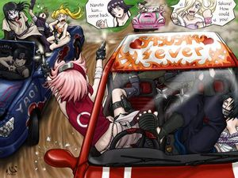

Sasusaku
 De: La Frikipedia, la enciclopedia extremadamente seria.
De: La Frikipedia, la enciclopedia extremadamente seria.
 Sasuke intentando "penetrar" a Sakura
«Sasuke no ama a Sakura, ni la amará ¡La quería ver muerta!»
~ Alguien realista hablando del Sasusaku
«Se quedará con Sakura, ya que ella lo ha esperado y siempre lo ha querido como es»
~ Un obsesionado SasuSaku hablando sobre sus fantasías sexuales
«Sasuke siempre quiso a Sakura para protegerla, no acepto la propuesta de que se vaya con el porque no quería que le sucediera nada... y al ultimo le agradecio por todo»
~ Un SasuSaku leyendo su manga inventado
«Sasuke solo tiene ojos para Naruto, a el no le importa Sakura»
~ Sasunaru defendiendo el amor yaoi
«¡¡Ya me tienen harto con esto!!. Vayanse a ver un shojo»
~ Masashi Kishimoto hablando sobre todas las parejas de Naruto
Sasusaku o SadoSaku (nombre designado por la gran cantidad de sadismo que tiene esta pareja), es la unión sentimental entre Sasuke y Sakura. Algunos la aman, otros la odian, la mayoría no entienden en qué diantres estaba pensando la gente cuando se les ocurrió juntar a esos dos en una relación romántica llena de sangre, odio y fluidos corporales.
Origen
Todo se remota a los primeros capítulos de Naruto, se observa a una infantil Sakura de 12 años fangirleando por el guapo Sasuke Uchiha como si éste se tratase de Justin Biever. La mayoría no se tomó en serio este fanatismo infantil, pero un pequeño grupo de fans empezó a fantasiar con que esos sentimientos algún día evolucionarían a un amor más verdadero y profundo, también con que Sasuke la correspondiese algún día. Lamentablemente para Sakura, desde el incio de la serie y en adelante, se ve cómo Sasuke pasa de su culo.
 Nunca separaran a Sasuke de Sakura
Razones por las cuales Sakura ama a Sasuke
- Es el mejor de la clase
- Es muy guapo
- Es un genio
- ¿Mencioné que es guapo?
Razones por las cuales Sasuke debe amar a Sakura
- Porque ella lo ama
No existen más razones.
El Objetivo
El objetivo es que Sakura se quede con el tío más guapo y malote de la serie mediante mal interpretar todo el manga, ignorar una gran parte y subestimar la mayoría de éste. Según el SS, Sasuke no está buscando una revolución, sino reconstruir el clan Uchiha con Sakura, usándola como útero con patas para que de a luz a miles de pequeños Sasukes emos con cabello rosa y sharingan. El objetivo también es reducir a Sakura a ser un personaje plano y monotemático que sólo pueda estar pendiente de su macho, siendo incapaz de hacer o sentir algo por nadie más.
Métodos y creencias del SS
- Es clave ignorar lo que pasa en el manga. Hechos como Sasuke intentando matar a Sakura son cosa sin importancia para la historia de esta pareja, por lo que pueden obviarse.
- Si Sasuke le dice "heh" a Sakura, es suficiente para compensar cualquier mal trago que hubiese habido entre ellos.
- Es dogma que Sakura sólo puede querer a Sasuke, se negará cualquier indicio de que pueda apreciar a alguien más.
- Ningún hombre le llega a los talones a Sasuke, ese es un hecho. Aunque Sasuke trate mal a Sakura, la quiera matar, la ignore y la considere una inútil, sólo él puede hacerla feliz bajo la lógica SadoSaku.
- Sasuke nunca ha reparado demasiado en Sakura, pero ella es la clave de su felicidad aunque todo indique lo contrario.
- Sasuke es tsundere, en realidad quiere a Sakura, pero lo hace tan secretamente que ni Kishimoto se ha enterado de eso.
- Si Sakura y Sasuke aparecen en la misma página del manga, aunque no interactúen entre ellos, se considera momentazo SasuSaku igual.
- Si Sakura está en el mismo mapa que Sasuke, entonces cualquier mirada tierna o sonrisa es dirigida a él por defecto, aunque ella esté hablando o interactuando con otro personaje.
- Cualquier contacto físico entre Sakura y Sasuke es considerado de tipo sexual. Aún cuando Sasuke quería acogotar a la Haruno.
- Naruto es un babuino naranjo apestoso cuyo único propósito es lograr que Sakura y Sasuke se queden juntos.
- Hinata es la principal aliada, pues es la encargada de quitar al babuino naranjo del medio. Es por ello que el NH es considerado el alma gemela del SS.
- Cualquiera que no shipee al SasuSaku es imbécil y no tiene ni puta idea del amor.
- Las portadas son prueba suficiente como para dar por canon a la pareja.
- El team 7 es igual a SasuSaku + Nabruto.
Momentos del SasuSaku resumidos
- Desde el capítulo 3 del manga se ve a una joven e insoportable Sakura fangirleando por Sasuke mientras éste pasa de ella. Para el SasuSaku, Sakura gritándo Kyaaah cada vez que el Uchiha se tira una flatulencia es sinónimo de amor puro.
- En la saga del país de las olas, se ve a Sakura desesperada llorando desconsolada junto al cadáver del tipo a quien acaba de conocer y cree amar, como si hubiera perdido a uno de sus padres.
- Sakura ha invitado a Sasuke a citas, pero este la rechaza constantemente con un seco "no, gracias". Es evidente que el chico es muy tímido.
- La Saga de los exámenes chuunin tiene varios momentazos SasuSakus. Por ejemplo, cuando Sasuke le dice a Sakura que es la más débil del grupo (peor que Naruto) y la manda a entrenar más. Es obvio que el Uchiha quería que la chica se haga más fuerte para él, pero es muy tímido como para decírselo de forma más suave. Luego le dice que es buena en genjutsu, eso es lo más amable que hace por ella en todo el manga y la mayor prueba de amor que tiene el SasuSaku, aunque ser amable con alguien no equivale a amarlo románticamente, si para el SS. Lástima que después de todo la amenaza de mala manera si se le ocurre contar algo sobre su marca maldita. Una de cal y otra de arena...
- Cuando lucha con Gaara, Sasuke dice que no dejará a sus preciosos nakamas (amigos) morir, entre ellos está Sakura. ¿No recuerdan? Team 7 = SasuSaku + Nabruto, por ende ese fue un momento SasuSaku.
- Cuando se recuperaba en el hospital de la pelea contra Gaara, Sasuke se da cuenta de que Naruto se está volviendo más fuerte que él. Se da cuenta de que Sakura está reconociendo también a Naruto, por eso le revolea unas manzanas por la cabeza. Sakura se lo buscó.
- Sakura se confiesa a Sasuke en medio de la desesperación de evitar que este deje la aldea. Lo intenta convencer con argumentos tales como que "ella se sentirá sola sin él" y que "aunque tenga amigos y familia, entiende su soledad". Luego le dice que "lo ayudará con su venganza", para acabar amenazándole que si sigue caminando "gritará y lo delatará". Sasuke le da las gracias por la atención y la knoquea. Se va igual.
- Sakura le hace prometer a Naruto, quien gusta de ella, que traerá a Sasuke en su lugar. El pobre y bueno de Naruto acepta hacer los egoístas deseos de Sakura realidad aunque él esté enamorado de ella.
- En el valle del fin Sasuke se ríe de los sentimientos de Sakura para hacer enfadar más a Naruto.
- Tres años después de la huida de Sasuke de la aldea, Sakura y Naruto lo encuentran en la guarida de Orochimaru. Sasuke la ve y la saluda con un "Sakura..." (gritos de fangirl), luego la intenta atravesar con su Katana y freír con un Kirin. Sakura acaba llorando.
- El siguiente momento SasuSaku ocurre cuando Sasuke se une a Akatsuki, decepcionando a Sakura y haciéndola llorar a Sakura de nuevo.
- Sakura se da cuenta de que Naruto está sufriendo por la promesa que le hizo hacer cuando Sasuke dejó la aldea, entonces va y se le confiesa a Naruto para hacerle desistir de cumplirla. Cuando Naruto se niega, decide matar a Sasuke para que "no caiga más en la oscuridad", aparentemente "lo ama" por eso.
- En el reencuentro del team 7, Sasuke intenta matar a Sakura dos veces, primero es salvada por Kakashi y luego por Naruto. Sakura llora de tristeza otra vez.
- Cuando un ninja random se le confiesa a Sakura, ella le dice que "hay alguien más"; cuando el ninja random le dice que "ese alguien debe ser una persona maravillosa", Sakura se entristece al darse cuenta de que Sasuke no concuerda con esa descripción.
- El segundo reencuentro del team 7 se ve a Sakura y Sasuke peleando juntos. Sasuke le dice "heh" a Sakura cuando ve su fuerza, momentazo. Luego Sakura tiene mugre en la cara que parece un sonrojo, como le habla a Sasuke, entonces es considerado como tal. Otro momento. La parte mejor viene cuando Sasuke se olvida de salvar a Sakura cuando el Juubi iba a matarlos a todos. Luego se ve a Sakura diciéndole a Sai que "confía en Sasuke kun" mientras que Sai se da cuenta de que la chica está mintiendo.
- Cuando ocurre el enfrentamiento con Madara, Sasuke intenta atacar a Madara pasando por encima de Sakura y casi cortándola al medio. Sakura se entristece de nuevo al darse cuenta de que Sasuke sigue pasando de ella.
- Al activarse el Tsukiyomi Infinito Sakura le pregunta a Sasuke que sucede, éste no ve necesario darle información a su novia, pues igual ella no es de utilidad en ese momento. Sakura se pone mal otra vez.
- Sale Kakashi diciendo que los sentimientos de Sakura por Sasuke ya no son los mismos, pero que de todas maneras la chica lo ayudará porque tiene buen corazón.
- Durante la pelea contra Kaguya, Sasuke intenta convencer a Naruto que Sakura es una carga para él, le pide que la deje caer en lava hirviendo y morir. Naruto se niega y Sakura le da las gracias.
- Luego de haberla maltratado, Sakura va en ayuda de Sasuke que quedó atrapado en otra dimensión. Obito hace énfasis en lo mucho que ella se esfuerza por ayudar a Naruto, pero el SasuSaku puede contentarse conque Sasuke sostuvo durante dos viñetas a Sakura que iba a desmayarse del cansancio. Por otro lado, Sasuke nunca le da las gracias.
- La pelea acaba y Sasuke revela sus verdaderas intenciones: quiere matar a la maestra de Sakura y al resto de los Hokages. Sakura de seguro está complacida con esta decisión.
- En la batalla final entre Sasuke y Naruto,este ultima sale vencedor. Sasuke lo confirma al decir: "Yo perdí".Ambos perdieron un brazo.Sakura se acerca para auxiliarlos,en ese momento Sasuke le pide perdón por todo lo que ha hecho,Sakura solo atina ha decir con lagrimas :" Mas te vale.Eres un problemático,estúpido".
- Por ultimo,en el capitulo final se observa a Sakura con el simbolo del clan Uchiha en la espalda junto a su hija,Sarada. .Sasuke se caso con Sakura,aunque el pasa mucho tiempo fuera de la aldea por una misión importante.
Conteo de intentos de asesinatos
- Sasuke intenta matar a Sakura cuando esta lo encuentra en la guarida de Orochimaru. Yamato la salva.
- Sasuke intenta freír a Sakura y cia con un Kirin. Orochimaru lo detiene.
- Sakura intenta apuñalar a Sasuke con un Kunai envenenado. Sasuke es más rápido que ella.
- Sasuke le intenta clavar un Chidori en la cabeza a Sakura. Kakashi la salva.
- Sasuke intenta devolverle el Kunai envenenado a Sakura. Naruto la salva.
- Sasuke intenta salvar a Juugo y Naruto del Juubi, iba a dejar morir a Sakura. Naruto salva a todos.
- Sasuke intenta atacar a Madara a través de Sakura (cortándola al medio). Naruto la salva.
- Sasuke le pide a Naruto que deje caer a Sakura y Kakashi en lava hirviendo. Naruto se niega.
Enemigos del Sasusaku
- Naruto
- Karin
- Cualquier Relacion Que Involucre a Sakura y Sasuke
Aliados
- NaruHina
- Naruto
- Cualquier relación que NO involucre a SASUKE Y SAKURA
Tipos de SasuSaku
Ese fan que expresa todo con labia y sensualidad para promover el SasuSaku
«En un rápido movimiento; y sin que la chica terminara de procesar la información, él había bajado la bragueta de sus pantalones y sin dificultad alguna había sacado su ya erecto miembro y con la agilidad digna de un maestro la había acomodado a ella, exactamente el centro de ésta, sobre el bulto que se erguía potente y orgulloso.»
~ Fan SasuSaku
- El Juan Palomo yo me lo guiso yo me lo como
Ese fan que fantasea con el SasuSaku y pronostica lo que sucederá en los próximos capítulos y luego el manga le trollea.
«Sakura irá a salvar a Sasuke para que no muera por la herida causada por Madara.»
~ Fan SasuSaku
Ese fan que si observa en el manga algo que no le gusta, lo ignora ampliamente y lo convierte en prueba SasuSaku
«no hay razones para preocuparse en realidad si es verdad que sasuke no esta muy cercano a sakura pero eso es porque el tio tiene miedo de que madara note que el la aprecia
si madara se da cuenta de que sasuke se preocupa por sakura la va a tomar como rehen para obligarlo a perder la batalla, por eso es que sasuke se hace el desinteresado
ademas de que estoy seguro de que a sasuke le cuesta mucho volver a amar y por eso esta algo negado, niega tanto su amor a sakura como su amistad hacia naruto. pero hay que entenderlo, el amor solo le ha traido dolor
sasuke esta muy roto en su interior, amo a su familia y se la mataron, amo a su hermano y lo mato...
no es facil para el aceptar sus lazos porque significaria que si los pierde le va a doler mucho pero con sakura tendra una nueva oportunidad para amar y la protegera con su vida para no perder a los que ama nunca mas»
~ Fan SasuSaku
Ese fan que se hace paralelismos con cualquier pareja/personaje y/o manga con tal de encontrar algo pro SasuSaku.
«El SasuSaku se presenta en diversas formas. En una de ellas es la similitud de las parejas que me ha llegado a gustar en mi vida, entre ellas se destaca...
- ErenxMikasa: Eren tiene una gran similitud a la personalidad de Sakura en combate, son luchadores a pasionales, siempre con la honestidad en alto, preocupando por el bienestar de su grupo. Por otra parte, Mikasa se parece mucho a Sasuke por ser frió, valiente y protector con la persona que ama, daría la vida por poder ver una sonrisa.
- KevinxGwen: Kevin es ver la misma imagen de Sasuke cuando estaban en el grupo de Naruto. Era serio y competidor, hacia lo que se le daba la gana, era un rebelde sin causa, con un pasado terrible. Pero todo cambio cuando Kevin conoció a Gwen, él es protector y cariñoso, la misma manera lo que hace Sasuke por Sakura.
- InuyashaxKikyo: Prácticamente es lo mismo pero ambientada en tragedia. Kikyo llego atacar a Inuyasha nublada por la traición y el desamor que recibió ella, la misma manera que le paso Sasuke con Sakura. Ambos personajes, ambos universos, ellos no sabían lo que estaban haciendo, solo se dejaron llevar sus emociones nubladas a otro nivel.
Es lindo ¿no creen?»
~ Fan SasuSaku
Ese fan que insulta y coacciona a diestro y siniestro si dudas de la existencia del SasuSaku
«Que estúpidos, es imposible que Sasuke intentase cortar a Sakura para atacar a Madara, bovio no tienen ni idea pendejos.»
~ Fan SasuSaku
Ese fan que analiza pixel a pixel las viñetas del manga para sacar un argumento pro SasuSaku
«Cada vez me sorprendo más, de lo maravillosos, profundos y
simbólicos, que son los FS al amor de Sakura por Sasuke, y como en
ellos mezclan, tan, pero tan exactamente igual, la tristeza que ella
siente en el manga al no tenerle y/o poder salvarle. El FS sasusaku,
es tan simbolico, tan lleno de sentimientos intensos..no sé, pero algo
tiene, que es de mucha calidad; pues si ven, los op con FS SS, tienen
siempre una simbologia de lo que siente sakura por el.»
~ Fan SasuSaku
Autor(es):
- Fordus
- Genericool
- Axelaxel12
- Priya311
- Scourge the Hedgehog
- Midorikawa-kun
- Wguayana
- Mbjenifer123
- Generibot
- Mifukai
Frikipedia 2005-2016, Licencia
GFDL 1.2 - Extraído por FrikiLeaks